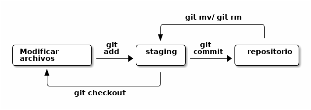
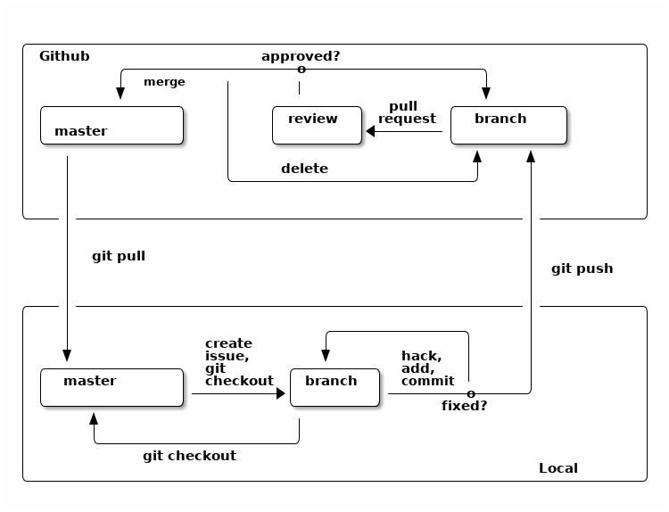

Programming for Data Science
Adolfo De Unánue
2019
Created: 2019-11-09 Sat 04:00
Table of Contents
Lectures
Licencia
Este trabajo se encuentra bajo la Licencia de
Creative Commons
Attribution ShareAlike 4.0
International License.
Para ver una copia de esta licencia, Visita: http://creativecommons.org/license/by-sa/4.0/
Introducción
Una encuesta rápida
Data science es …
El científico de datos
Productos de datos
Disminución del dolor
Cualquier barrera, impedancia entre tu cerebro y los datos hará tu trabajo menos efectivo y te causará mucho dolor.
Tener las herramientas adecuadas, saber que esas herramientas existen y conocer cómo y cuándo utilizarlas es lo que distingue a una persona experta.
Filosóficamente: Dataísmo
Filosóficamente: Dataísmo
A Dataist is someone that trusts Big Data (above) and computer algorithms, in preference to human knowledge and wisdom.
Homo Deus: A Brief History of Tomorrow. Yuval Noah Harare (2017)
Línea de comandos
La computadora
Las computadoras sólo hacen cuatro cosas:
¿Por qué?
En muchas ocasiones, se verán en la necesidad de responder muy rápido y en una etapa muy temprana del proceso de big data . Las peticiones regularmente serán cosas muy sencillas, como estadística univariable y es aquí donde es posible responder con las herramientas mágicas de UNIX.
Línea de comandos
La línea de comandos es lo que estará entre nosotros y la computadora casi todo el tiempo en este curso. De hecho, una lectura obligada1 es In the beginning…was de command line de Neal Stephenson, el escritor de Criptonomicon2.
La CLI es otro programa más de la computadora y su función es
ejecutar otros comandos. El más popular es bash, que es un acrónimo
de Bourne again shell. Aunque en esta clase también usaremos zsh3.
Archivos y directorios
La computadora guarda la información de una manera ordenada. El
sistema encargado de esto es el file system, el cual es básicamente un árbol
de información4 que guarda los datos en
una abstracción que llamamos archivos y ordena los archivos en
carpetas o directorios, los cuales a su vez pueden contener otros
directorios.
TODO en los sistemas operativos *nix (como Unix, GNU/Linux,
FreeBSD, MacOS, etc) es un archivo.
Muchos de los comandos del CLI o shell tienen que ver con la
manipulación del file system.
Filosofía UNIX
Creada originalmente en 1978 por Doug McIlroy, la filosofía de UNIX es un acercamiento al diseño de software que enaltece el software modular y minimalista.
Han existido varias adaptaciones5, pero la que más me gusta es la de Peter H. Salus,
Es importante tener estos principios en mente, ya que ayuda a enmarcar los conceptos que siguen.
Conocer los alrededores
Estas combinaciones de teclas (keybindings) son universales. Te recomiendo que las practiques y configures tus otras herramientas con estos mismas combinaciones, por ejemplo RStudio ó JupyterLab .
¿Qué hacen las siguientes combinaciones?
Para tener más información sobre los bindings consulta aquí.
Imprime el nombre del directorio actual
pwd
Cambia el directorio un nivel arriba (a el directorio padre 7)
cd ..
Si quieres regresar al directorio anterior
cd -
Cambia el directorio $HOME (tu directorio) utilizando ~
cd ~
o bien, no pasando ningún argumento
cd
ls Lista los contenidos (archivos y directorios) en el
directorio actual, pero no los archivos ocultos.
ls
Lista los contenidos en formato largo (-l), muestra
el tamańo de los archivos, fecha de último cambio y permisos
ls -l
Lista los contendios en el directorio actual y todos los sub-directorios en una estructura de árbol
tree
Límita la expansión del árbol a dos niveles
tree -L 2
Muestra los archivosshows file sizes (-s) in
human-readable format (-h)
tree -hs
Muestra el principio (head) del archivo, -n especifica el número de líneas (10).
head -n10 $f
Muestra la final (tail) del archivo.
tail -n10 $f
Muestra la parte final del archivo
cada segundo (usando watch)
tail -n10 $f | watch -n1
"seguir" (follows) (-f) la parte final del archivo, cada vez que hay cambios
tail -f -n10 $f
Seguir archivos es útil cuando estás ejecutando un programa que guarda información a un archivo, por ejemplo un log
Cuenta las palabras, caracteres y líneas de un archivo
wc $f
Encuentra el archivo por nombre
find -name "<lost_file_name>" -type f
Encuentra directorios por nombre
find -name "<lost_dir_name>" -type d
La línea de comandos permite usar comodines (wildcards)8 para encontrar archivos:
El primer glob que veremos es *:
echo *
El shell expandió * para identificarlo con todos los archivos del
directorio actual.
Obvio lo puedes usar con otros comandos, como ls:
Listar todos los archivos que tienen una extensión txt
ls *.txt
Listar todos los archivos que contienen a en el nombre y extensión
txt
ls *a*.txt
* no es el único carácter especial. ? hace match con cualquier
carácter individual.
Listar todos los archivos que tienen 5 caracteres en el nombre:
ls ?????,txt
Conectando comandos
- Entubando
El símbolo
|(pipe) “entuba” la salida de un comando al siguiente comando. Por ejemplo:ls -la | wc -l
La salida de
ls -laen lugar de ser impresa en pantalla9 es enviada awc -lEl siguiente ejemplo utiliza
greppara buscar y seleccionar cadenas o patronesseq 50 | grep 3
Veremos más sobre
seqygrepmás adelante. stdin,stdoutystderr
stdin(entrada estándar),stdout(salida estándar) ystderr(error estándar) son canales de interacción de la terminal. En tu terminal, todos apuntan a la pantalla, pero es posible redireccionarlos hacia otros lados.Los tres canales están asignados a los siguientes file descriptors10
Es posible redireccionar por ejemplo, todos los mensajes de error a un archivo
rm este_archivo_no_existe 2> error.txt
Si quieres ignorar los errores, puedes mandarlos a un agujero negro11 estándar, i.e.
/dev/null:algun_comando 2> /dev/null
o apuntar
stdoutystderral mismo lado (configuración por default)algun_comando 2>&1
- Redireccionando hacia
Los símbolos
>,>>Redireccionan la salida de los comandos a un sumidero (sink), e.g. un archivo, o la pantalla o la impresora.La salida de
lsse guarda en el archivoprueba.bat.ls >> prueba.dat
Similar al ejemplo anterior
seq 10 > numeros.txt
¿Cuál es la diferencia?
TIP: Ejecuta varias veces los ejemplos anteriores
- Redireccionando desde
<Redirecciona desde el archivosort < prueba.dat # A la línea de comandos acomoda con sort, sort < prueba.dat > prueba_sort.dat # Guardar el sort a un archivo.
Incluso puedes hacer
< prueba.dat wc -l
Esto suena muy similar a
cat prueba.dat | wc -l
< prueba.dat wc -les más eficiente, ya que no está generando un subproceso (lo cual puede ser muy importante en procesamiento intensivo.
Algunos comandos útiles
- seq
Genera secuencias de números
seq 5
La sintaxis es:
seq inicio step final. Por ejemploseq 1 2 10
genera la secuencia de 1 al 10 de dos en dos.
Usando otro separador (
-s) que no sea es caracter de espacioseq -s '|' 10Agregando padding
seq -w 1 10
- tr
Cambia, reemplaza o borra caracteres del
stdinalstdoutecho "Hola mi nombre es Adolfo De Unánue" | tr '[:upper]' '[:lower]'
echo "Hola mi nombre es Adolfo De Unánue" | tr -d ' '
echo "Hola mi nombre es Adolfo De Unánue" | tr -s ' ' '_'
- wc
wcsignifica word count. Este comando cuenta las palabras,renglones, bytes en el archivo.En nuestro caso nos interesa la bandera
-lla cual sirve para contar líneas.seq 30 | grep 3 | wc -l
- head, tail
headytailsirven para explorar visualmente las primeras diez (default) o las últimas diez (default) renglones del archivo, respectivamente.head UFO-Dic-2014.tsv tail -3 UFO-Dic-2014.tsv
- cat
catconcatena archivos y/o imprime alstdoutecho 'Hola mundo' >> test echo 'Adios mundo cruel' >> test cat test rm test
Podrías hacer lo mismo, sin utilizar echo
cat >> test # Teclea Hola mundo # Teclea Adios mundo cruel # Ctrl-C
También podemos concatenar archivos
cat UFO-Nov-2014.tsv UFO-Dic-2014.tsv > UFO-Nov-Dic-2014.tsv wc -l UFO-Nov-Dic-2014.tsv
En el siguiente ejemplo redireccionamos al stdin el archivo como
entrada del wc -l sin generar un nuevo proceso
< numeros.txt wc -l
split hace la función contraria de cat, divide archivos.
Puede hacerlo por tamaño (bytes, -b) o por líneas (-l).
split -l 500 UFO-Nov-Dic-2014.tsv wc -l UFO-Nov-Dic-2014.tsv
Con cut podemos dividir el archivo pero por columnas.
Las columnas puede estar definidas como campo (-f, -d), carácter (-c) o bytes (-b).
Creemos unos datos de prueba
echo "Adolfo|1978|Físico" >> prueba.psv echo "Paty|1984|Abogada" >> prueba.psv
Ejecuta los siguientes ejemplos, ¿Cuál es la diferencia?
cut -d’|’ -f1 prueba.psv cut -d’|’ -f1,3 prueba.psv cut -d’|’ -f1-3 prueba.psv
columnas (-k), usar ordenamiento numérico (-g, -h, -n), mes
(-M), random (-r) etc.
sort -t "," -k 2 UFO-Nov-Dic-2014.tsv
# Group by por estado y fecha cat UFO-Dic-2014.tsv |\ cut -d$'\t' -f1,3 |\ tr '\t' ' ' |\ cut-d' ' -f1,3 |\ sort -k 2 -k 1 |\ uniq -c |\ sort -n -r -k 1 |\ head
# Ejecuta un servidor web en el puerto 8888 python -m http.server 8888
Ve a la dirección mostrada en la terminal en tu navegador
Si presionas Ctrl+z suspenderás la ejecución de ese programa, pero
no será cancelado. Observa que el shell te devolvió el control de
la terminal. Trata de ver de nuevo la lista de archivos en el
navegador … y el navegador se quedará en Waiting for 0.0.0.0 …
Regresa a la terminal y ejecuta
jobs
jobs muestra que programas están ejecutándose
y su estatus. En particular, el servidor http está detenido.
Para activarlo usa
fg
fg significa foreground. Interrumpe la ejecución con Ctrl+c.
Si quieres ejecutar el servidor y no bloquear la terminal agrega &
al final.
python -m http.server 8888 &
De esta manera el servidor está ejecutándose en el background.
Es importante saber que estos procesos o jobs estarán ejecutándose mientras tu sesión esté activa. Si te desconectas los procesos serán terminados.
Más adelante veremos como solucionar esto.
Descargar datos
Es posible hacer peticiones de HTTP (http requests)12 desde la línea de comandos.
El comando para hacerlo es curl.
curl http://www.gutenberg.org
Si hay redirecciones puedes usar -L para seguir la redirección (por
ejemplo en los casos donde hay un url shortener, como bit.ly.
La respuesta (response) incluye el body (lo que ves en el navegador) y el header (metainformación sobre la petición y respuesta). Si sólo quieres ver el header
curl -I https://duckduckgo.com
El header contiene un pedazo de información crucial: el status code. El status code te sirve para ver el estado de la página:
curl -I https://duckduckgo.com 2>/dev/null | head -n 1 | cut -d$' ' -f2
donde:
Expresiones regulares
In computing, regular expressions provide a concise and flexible means for identifying strings of text of interest, such as particular characters, words, or patterns of characters. Regular expressions (abbreviated as regex or regexp, with plural forms regexes, regexps, or regexen) are written in a formal language that can be interpreted by a regular expression processor, a program that either serves as a parser generator or examines text and identifies parts that match the provided specification.
Wikipedia: Regular Expressions
(25[0-5]|2[0-4][0-9]|[01]?[0-9][0-9]?\.){3}(25[0-5]|2[0-4][0-9]|[01]?[0-9][0-9]?)
Analizando datos14: Comandos avanzados
- grep
grepnos permite buscar líneas que tengan un patrón específico. Es el equivalente a un filtro.La sintáxis es sencilla:
grep [banderas] patron [archivo]
Por ejemplo, todos los avistamientos en California en Noviembre y Diciembre de 2014:
grep "CA" UFO-Nov-Dic-2014.tsvEn una vuelta irónica de esta historia, ellos clasifican posibles avistamientos como "fraudes" (hoax)
grep "HOAX" UFO-Nov-Dic-2014.tsv
Dos banderas importantes de grep son -v (negación/complemento):
grep "HOAX" UFO-Nov-Dic-2014.tsv grep -v "18:" UFO-Nov-Dic-2014.tsv
y -E (interpretar el patrón como una regex).
grep -E "18:|19:|20:" UFO-Nov-Dic-2014.tsv grep -E "[B|b]lue|[O|o]range" UFO-Nov-Dic-2014.tsv
Otras banderas importantes son las siguientes
| bandera | significado |
|---|---|
-i |
Ignora mayúsculas / minúsculas |
-o |
Regresa todos los match en lugar de la línea que contiene el match |
-c |
Cuenta el resultado |
Usando estas banderas tenemos una versión más simple que el filtrado anterior
grep -i -E "[blue|orange]" UFO-Dic-2014.tsv
¿Por qué son diferentes los siguientes comandos?
grep -c -o -E "[B|b]lue|[O|o]range" UFO-Nov-Dic-2014.tsv # Ejecuta una bandera a la vez
y
grep -o -E "[B|b]lue|[O|o]range" UFO-Nov-Dic-2014.tsv | sort | uniq -c
Más diversión con expresiones regulares
grep "\/[0-9]\{1,2\}\/" UFO-Dic-2014.tsv grep -v "\/[0-9]\{4\}" UFO-Dic-2014.tsv grep -E "([aeiou]).*\1" names.txt echo "Hola grupo ¿Cómo están?" | grep -oE '\w+'
awk es un lenguaje de programación muy completo, orientado a
archivos de texto que vengan en columnas15
Un programa de awk consiste en una secuencia de enunciados del tipo patrón-acción:
awk 'search pattern { action statement }' [archivo]
awk define algunas variables especiales:
Imprime la Ciudad (City) del avistamiento
awk -F"[\t]" '{ print $2 }' UFO-Nov-2014.tsv
Otros ejemplos:
Verificar el número de columnas en todo el archivo
awk -F"[\t]" '{ print NF }' UFO-Nov-Dic-2014.tsv \ | sort -n | uniq
Imprimir el número de columnas de cada renglón
awk -F"[\t]" '{ print NF ":" $0 }' UFO-Nov-Dic-2014.tsv
Es posible usar tests para imprimir o hacer otra operación:
awk -F"[\t]" '{ $2 = ""; print }' UFO-Nov-Dic-2014.tsv
En este ejemplo, sólo se imprimen las líneas que no contienen Ciudad
(City)
¿Cómo verificas que estas líneas tengan 7 columnas, a pesar de no tener ciudad?
Además de tests es posible usar bloques if-then-else:
awk 'BEGIN{ FS = "\t" }; { if(NF != 7){ print >> "UFO_fixme.tsv"} \ else { print >> "UFO_OK.tsv" } }' UFO-Nov-Dic-2014.tsv
Este es un truco que uso todo el tiempo para mover las líneas con columnas de más o de menos a otro archivo.
awk tiene otros dos modificadores: BEGIN y END que indican
cuando debe de ejecutarse las instrucciones, si antes de leer el
archivo (BEGIN) o al terminar de leer el archivo (END)
Como un ejemplo sencillo, lo siguiente es equivalente a wc -l
awk 'END { print NR }' UFO-Nov-Dic-2014.tsv
La manera de interpretarlo es: luego de leer todo el archivo (END)
imprime el número de línea.
Podemos hacer operaciones con los datos en las columnas:
awk 'BEGIN{ FS = "," }; {sum += $1} END {print sum}' data.txt awk -F, '{sum1+=$1; sum2+=$2;mul+=$2*$3} END {print sum1/NR,sum2/NR,mul/NR}' numbers.dat awk -F, '$1 > max { max=$1; maxline=$0 }; END { print max, maxline }' numbers.dat
También podemos usar regexs como condicionales, para substituir o para
awk '/CA/ { n++ }; END { print n+0 }' UFO-Nov-Dic-2014.tsv awk '{ sub(/FL/,"Florida"); print }' UFO-Nov-Dic-2014.tsv awk '{ gsub(/foo/,"bar"); print }' UFO-Nov-Dic-2014.tsv awk '/baz/ { gsub(/foo/, "bar") }; { print }' UFO-Nov-Dic-2014.tsv awk '!/baz/ { gsub(/foo/, "bar") }; { print }' UFO-Nov-Dic-2014.tsv awk 'a != $0; { a = $0 }' # Como uniq awk '!a[$0]++' # Remueve duplicados que no sean consecutivos awk -F"[\t]" '$4 ~/Circle/' UFO-Nov-Dic-2014.tsv awk -F"[\t]" ' BEGIN { conteo=0;} $4 ~/Circle/ { conteo++; } END { print "Número de avistamientos circulares en el dataset =",conteo; }' UFO-Nov-Dic-2014.tsv
Existen (al menos) 3 implementaciones de awk:
Si estás teniendo problemas para ejecutar algo (como quedarte sin
memoria o que haya funciones que no existen) probablemente no estás
usando gawk. Verifica que tengas esa implementación instalada. Te
ahorrará muchos dolores de cabeza.
Para saber más consulta el manual GNU awk Effective AWK Programming
A veces queremos editar o cambiar el contenido de nuestros
datasets, por ejemplo, quizá queramos deshacernos de ciertos
renglones (e.g. headers repetidos) o queremos cambiar el valor de
una columna (e.g. cambiar el código 1 a rojo), sed es la
herramienta que nos ayudará a hacer esto. sed significa stream
editor . Permite editar archivos de manera automática.
sed lee el flujo de entrada hasta que encuentra
\n. Lo copia al espacio patrón, y es ahí donde se realizan las
operaciones con los datos. sed contiene un búfer que puede ser
utilizado para mantener una memoria, pero es
opcional, finalmente copia al flujo de salida.
Hay mucho, mucho poder en esta herramienta. La sintaxis es
sed [banderas] comando/patrón/[reemplazo]/[modificador] [archivo]
Iniciemos con el comando para sustituir: s.
sed 's/foo/bar/' data3.txt
Si queremos guardar la salida a un archivo, no olvides que hay redirecciones
sed 's/foo/bar/' < data3.txt > data4.txt # O también < data3.txt sed 's/foo/bar/' > data4.txt
Nota lo que sucede en el siguiente ejemplo:
sed 's/uno/UNO/' < texto.txt
este es el funcionamiento por omisión de sed.
Estamos usando / como separador ya que es el que usa vim o man
(¿Recuerdas el primer ejercicio?), pero en realidad puedes usar
cualquier otro caracter:
Guión bajo (underscore)
sed 's_uno_UNO_' < texto.txt
o también dos puntos (:)
sed 's:uno:UNO:' < texto.txt
son opciones relativamente populares.
Para hacer la sustitución global (i.e. todas las ocurrencias del
patrón en la línea), usamos el modificador g
sed 's/uno/UNO/g' < texto.txt
También es posible hacerlo en algunas partes del archivo, especificando la líneas. Por ejemplo en los siguientes ejemplo
sed '3s/foo/bar/' data3.txt # Sólo la tercera linea sed '3!s/foo/bar/' data3.txt # Excluye la tercera línea sed '2,3s/foo/bar/' data3.txt # Con rango
Si observas bien, el número de línea funciona como un filtro. Es
posible extender la idea y usar patrones: Sustituir globalmente
foo por bar en las líneas que tengan 123.
sed '/123/s/foo/bar/g' data3.txt
Podemos mezclar ambas ideas y seleccionar partes del archivo usando rangos y patrones
sed '/abc/,/456/s/foo/BAR/g' data3.txt
Otro modificadores importantes son d (delete) y p (print)17
sed -n '2,3p' data3.txt # Imprime sólo las líneas de la 2 a la 3 sed -n '$p' # Imprime la última línea sed '/abc/,/-foo-/d' data3.txt # Elimina todas las líneas entre "abc" y "-foo-" sed 1d data2.txt # Elimina la primera línea del archivo
En todos los ejemplos anteriores, sed leía la fuente y emitía el
resultado modificado a stdout. De esta manera, la fuente original no
es modificada. La manera de hacerlo in place con la bandera -i.
sed -i 1d data2.txt # Elimina la primera línea del archivo de manera interactiva
Bash programming
La mayor parte del tiempo usaremos el shell, para hacer pequeños
scripts, pero existen ocasiones en las cuales es necesario tratar al
shell como un lenguaje de programación18
- Estructuras de datos
Las variables son declaradas
nombre="Adolfo"
Nota que no hay espacios alrededor del signo de igual. El valor de la variable se obtiene con el signo de dólares
echo $nombre
Es posible definir variables que no sean escalares, llamadas arreglos (
arrays).array=(abc 123 def "programming for data science")
Para acceder a elementos en el arreglo usa la posición e.g.
3:echo ${array[3]}
Tambien es posible usar globs
echo ${array[*]}
Para conocer el número de elementos del arreglo
echo ${#array}
Los arreglos es un punto donde los diferentes shells ejecutan diferente.
bashtiene índices basados en0,zshen1. - Bucles de ejecución, (Loops)
Los
for-loopsenbashtienen una estructura muy similar a los depython:for var in iterable; do instrucción instrucción ... done
Donde
iterablepuede construirse con globsfor i in *; do echo $i; done
listas,
for i in hola adios mundo cruel; do echo $i; done
arreglos,
for i in $array; do echo $i; done
E inclusive el horrible formato de C:
for (( i = 0; i < 10; i++ )) do echo $i; done
También puedes escribirlo en una sola línea: for i in {a..z}; do echo $i; done
Las funciones son símbolo de buena programación, ya que encapsulan comportamiento.
La sintaxis es muy simple:
function function_name { # cuerpo de la función }
A diferencia de otros lenguajes de programación, no se definen los argumentos de la función.
Para ejecutar la función
function_name "Hola mundo" 123
En este caso "Hola mundo" y 123 son pasados como argumentos a la
función. Estos pueden ser usados en el cuerpo de la función usando la
posición de los mismos e.g. $1 es "Hola mundo", $2 es 123, etc.
Para cualquier archivo script es importante que la primera línea del
archivo le diga al shell que comando usar para ejecutarlo.
A la primera línea se conoce como shebang y se representa por #!
seguido de la ruta al ejecutable, e.g.:
Sin el shebang, para ejecutar el archivo ejemplo.py debes de hacer:
python ejemplo.py
pero, si agregamos el shebang 19, puedes ejecutar el archivo de
la siguiente manera:
./ejemplo.py
Te preguntarás ¿Cómo conecto estos scripts con los demás usando |, >, etc?
Sencillo: Hay que modificar nuestros scripts de python, R y bash para
leer del stdin.
stdin
Un ejemplo mínimo de python es el siguiente:
#!/usr/bin/env python import sys def process(linea): linea = int(linea.strip()) print(f"El triple de {linea} es {linea*3}") for linea in sys.stdin: process(linea)
Abre nano, copia este código y guarda el archivo como
script.py. Un ejemplo de uso es el que sigue:
seq 1 1000 | script.py
stdin
El ejemplo en R se ve así:
#!/usr/bin/env Rscript f <- file("stdin") x <- c() open(f) while(length(line <- readLines(f, n = 1)) > 0) { x <- c(x, as,numeric(line)) print(summary(x)) } close(f) print("Final summary:") summary(x)
Ejemplo de uso:
< /data/numbers.txt script.R
Controlador de versiones git
"Solo" Workflow
- Crear un repositorio
El repositorio es la carpeta donde
gitguarda y gestiona todas las versiones de los archivos.Crea una carpeta en tu
$HOMEllamadads-test, ingresa a ella e inicializa el repositorio congit init. ¿Notas algún cambio? ¿Qué comando usarías? Hay una carpeta ahí ¿no la ves? ¿Cómo puedes ver una carpeta oculta?La carpeta
.gites la carpeta donde se guarda todo el historial, si la borras, toda la historia del repositorio se perderá.Podemos verificar que todo esté bien, con el comando
status.git status
- Llevando registro de los cambios a archivo
Crea un archivo llamado
hola.txten la carpetads-testtouch hola.txt echo "¡hola mundo!" > hola.txt
Ahora ejecuta el siguiente comando
git status
El mensaje de
untracked filessignifica que hay archivos en el repositorio de los cualesgitno está llevando registro, i.e. el repositorio está sucio.
Git sigue este flujo:

Figure 1: Git "solo workflow"
Para que git lleve el registro (tracking) del archivo, debes de
agregarlo (add):
git add hola.txt git status
Ahora git sabe que debe de llevar registro de los cambios de
hola.txt, pero aún se comprometen los cambios al repositorio
(Changes to be commited: ...). Para comitearlos20:
git commit -m "Commit inicial"
Usamos la bandera -m para agregar un mensaje que nos ayude a
recordar más tarde que se hizo y por qué.
Si ejecutamos
git status
nos indica que todo está actualizado (up to date). Podemos ver la
historia de cambio con git log.
Edita hola.txt luego, ejecuta git status. ¿Qué observas ahora?
La parte clave es no changes added to commit. Hemos cambiado el
archivo, pero aún no están "comprometidas" o guardadas en el repositorio.
Para ver que ha cambiado usamos lo siguiente
git diff
Hagamos commit de estos cambios.
git commit -m 'actualizamos hola.txt'
Pero git no nos dejará hacer el commit, ya que no lo agregamos antes al índice del
repositorio. Agrégalo y repite el commit
Modifica de nuevo hola.txt. Observa los cambios y agrégalo. ¿Qué
sucede si vuelves a ejecutar git diff?
Git dice que no hay nada, ya que para git no hay diferencia entre
el área de staging y el último commit (llamado HEAD).
Para ver los cambios, ejecuta
git diff --staged
esto muestra las diferencias entre los últimos cambios comiteados y
lo que está en el área de staging. Ahora realiza el commit, verifica
el estatus y revisa la historia.
Podemos ver los cambios entre diferentes revisiones, podemos usar
la siguiente notación: HEAD~1, HEAD~2, etc. como sigue:
git diff HEAD~1 hola.txt git diff HEAD~2 hola.txt
También podemos utilizar el identificador único (el número enorme que
aparece en el git log), inténtalo.
Modifiquemos de nuevo el archivo hola.txt. ¿Qué tal si nos
equivocamos y queremos regresar los cambios? Podemos ejecutar el
comando
git checkout HEAD hola.txt
Nota que git recomienda un shortcut para esta operación: (use
"git checkout -- <file>..." to discard changes in working directory))
Obviamente aquí podemos regresarnos las versiones que queramos, por lo
que podemos utilizar el identificador único o HEAD~2 por ejemplo.
Por último, git tiene comandos mv y rm que deben de ser usados
cuando queremos mover o borrar un archivo del repositorio, i.e. git
mv y git rm.
Github flow
Ahora trabajaremos en equipo, el flujo cambia respecto al solo flow. El cambio se debe a la introducción de nuevos conceptos: clonar, push/pull, issue y branch.

Figure 2: Github flow
Para entender este diagrama, necesitamos explicar estos nuevos verbos.
En github flow es muy importante que:
Hacer commits frecuentemente permite que podamos hacer control de versiones de manera granular. Si un bug aparece, podemos regresar a versiones pasadas dónde el bug no existía.
Otra ventaja es que commits pequeños y frecuentes ayudan a tus compañeros de trabajo (y tu futuro tú) entiendan mejor cuál es tu intención.
En serio, escribe mensajes que tengan sentido

Figure 3: Imagen de XKCD
Ejercicio en equipo
git checkout -b issue-N
donde N es el número de issue correspondiente.
git branch
# En el branch correspondiente (i.e. issue-N) git add ml.py git commit -m "Completada la función XXXX" #Donde XXX es el nombre de la función git push origin issue-M
# La persona encargada del PR ... # En el branch correspondiente (i.e. issue-N) git add ml.py git commit -m "Incorporando los cambios del reviewer" #Donde XXX es el nombre de la función git push origin issue-M
# En la computadora del encargado del PR ... git checkout master git branch -D issue-N
git checkout master git pull origin master
Desarrollo de software
Un consejo
"The way to learn to program is by programming"
Nathan Myhrvold
El código es para comunicarse con humanos
NOTE: Los slides siguientes están basados en el trabajo de Kevin
Wilson (@khwilson)
El código es para humanos, no para computadoras.
Lo que escribes
def fib(n): """ :param int n: The Fibonnaci index you want to return :return: The nth Fibonnaci number :rtype: int """ if n < 2: return 1 else: return fib(n - 1) + fib(n - 2)
Lo que la computadora ve
2 0 LOAD_FAST 0 (n)
3 LOAD_CONST 1 (2)
6 COMPARE_OP 0 (<)
9 POP_JUMP_IF_FALSE 16
3 12 LOAD_CONST 2 (1)
15 RETURN_VALUE
5 >> 16 LOAD_GLOBAL 0 (fib)
19 LOAD_FAST 0 (n)
22 LOAD_CONST 2 (1)
25 BINARY_SUBTRACT
26 CALL_FUNCTION 1
29 LOAD_GLOBAL 0 (fib)
32 LOAD_FAST 0 (n)
35 LOAD_CONST 1 (2)
38 BINARY_SUBTRACT
39 CALL_FUNCTION 1
42 BINARY_ADD
43 RETURN_VALUE
44 LOAD_CONST 0 (None)
47 RETURN_VALUE
En serio, es para ti
Da nombres informativos
import math def doit(x): output = [] y = 2 while x != 1: if x % y == 0: output.append(y) x //= y else: y += 1 continue return output
Da nombres informativos
def magic(input): filter = set() return sorted(x for x in y for y in input if (len(x) < 20 and x not in filter) or filter.add(x))
Da nombres informativos
def pretty_pictures(): df = pd.read_csv('2016.csv.gz', names=['STATION', 'DATE', 'TYPE', 'VALUE', 'MEASUREMENT_FLAG', 'QUALITY_FLAG', 'SOURCE_FLAG', 'OBS_TIME']) first = df[weather_df.STATION == 'US1ILCK0010'] first[first.TYPE == 'PRCP']['VALUE'].plot() plt.title("Precipitation values") plt.xlabel("Day") plt.ylabel("Value") plt.savefig('first_fig.png') second = df[weather_df.STATION == 'US1ILCK0014'] second[second.TYPE == 'PRCP']['VALUE'].plot() plt.title("Precipitation values") plt.xlabel("Day") plt.ylabel("Value") plt.savefig('second_fig.png') return first[first.TYPE == 'PRCP'].mean(), second[second.TYPE == 'PRCP'].mean()
Da nombres informativos
Documenta entradas y salidas
import math def factor(x): output = [] fact = 2 while x != 1: if x % fact == 0: output.append(y) x //= fact else: fact += 1 continue return output
Documenta entradas y salidas
def unique_flatten(the_input, max_length=20): flattened_set = {val for val in row for row in the_input} filtered_list = [val for val in flattened_set if len(val) < max_length] filtered_list.sort() return filtered_list
Documenta entradas y salidas
WEATHER_HEADERS = ['STATION', 'DATE', 'TYPE', 'VALUE', 'MEASUREMENT_FLAG', 'QUALITY_FLAG', 'SOURCE_FLAG', 'OBS_TIME'] PRECIPITATION_TYPE = 'PRCP' CHICAGO_STATION_NAMES = ['US1ILCK0010', 'US1ILCK0014'] def precipitation_in_chicago(): df = pd.read_csv('2016.csv.gz', names=WEATHER_HEADERS) first = df[weather_df.STATION == CHICAGO_STATION_NAMES[0]] first[first.TYPE == PRECIPITATION_TYPE]['VALUE'].plot() plt.title("Precipitation values") plt.xlabel("Day") plt.ylabel("Value") plt.savefig('first_fig.png') second = df[weather_df.STATION == CHICAGO_STATION_NAMES] second[second.TYPE == PRECIPITATION_TYPE]['VALUE'].plot() plt.title("Precipitation values") plt.xlabel("Day") plt.ylabel("Value") plt.savefig('second_fig.png') return (first[first.TYPE == PRECIPITATION_TYPE].mean(), second[second.TYPE == PRECIPITATION_TYPE].mean())
Documenta entradas y salidas
En python 3.6 : Static type checking
En versiones recientes de python es posible indicar el tipo de las
variables:
from typing import Dict def do_ml_magic(algorithm: str, hyperparams: Dict) -> Model: ... train_date: date = ... model: Model = ... return model
Estas adiciones son sugerencias, es decir son estáticas. Puedes
verificar tu código con mypy o con tu editor (como GNU Emacs o PyCharm)
Don't repeat yourself: DRY
def max_intersection(left, right): """ Compute the value counts of the left and right lists and then return the maximum for each value. :param list[object] left: The left list :param list[object] right: The right list :rtype: dict[object, int] :return: A dictionary from the value to max(# occurrences in left, # occurrences in right) """ left_counts = {} for val in left: if left not in left_counts: left_counts[val] = 1 else: left_counts[val] += 1 right_counts = {} for val in right: if right not in right_counts: right_counts[val] = 1 else: right_counts[val] += 1 left_counts.update({key: max(left_counts.get(key, 0), val) for key, val in right_counts.items()}) return left_counts
DRY (o a otros!)
def value_counts(the_list): """ :param list[object] the_list: The list whose values we'll count :rtype: dict[object, int] :return: A dict from the value to its count """ output = {} for val in the_list: if val not in output: output[val] = 1 else: output[val] += 1 def max_intersection(left, right): """ Compute the value counts of the left and right lists and then return the maximum for each value. :param list[object] left: The left list :param list[object] right: The right list :rtype: dict[object, int] :return: A dictionary from the value to max(# occurrences in left, # occurrences in right) """ left_counts = value_counts(left) right_counts = value_counts(right) left_counts.update({key: max(left_counts.get(key, 0), val) for key, val in right_counts.items()}) return left_counts
DRY (solución)
from collections import Counter def max_intersection(left, right): """ Compute the value counts of the left and right lists and then return the maximum for each value. :param list[object] left: The left list :param list[object] right: The right list :rtype: dict[object, int] :return: A dictionary from the value to max(# occurrences in left, # occurrences in right) """ left_counts = Counter(left) right_counts = Counter(right) left_counts.update({key: max(left_counts.get(key, 0), val) for key, val in right_counts.items()}) return left_counts
no DRY, WET
def precipitation_in_chicago(): """ Saves plots of the precipitation from two Chicago weather stations in 2016 to `first_fig.png` and `second_fig.png` and returns the mean precipitation at them for the year. :return: The mean precipitation at two weather stations in 2016 :rtype: (float, float) """ df = pd.read_csv('2016.csv.gz', names=WEATHER_HEADERS) first = df[weather_df.STATION == CHICAGO_STATION_NAMES[0]] first[first.TYPE == PRECIPITATION_TYPE]['VALUE'].plot() plt.title("Precipitation values") plt.xlabel("Day") plt.ylabel("Value") plt.savefig('first_fig.png') second = df[weather_df.STATION == CHICAGO_STATION_NAMES[1]] second[second.TYPE == PRECIPITATION_TYPE]['VALUE'].plot() plt.title("Precipitation values") plt.xlabel("Day") plt.ylabel("Value") plt.savefig('second_fig.png') return (first[first.TYPE == PRECIPITATION_TYPE].mean(), second[second.TYPE == PRECIPITATION_TYPE].mean())
DRY
def plot_precipitation(df, station_id, output_file='out.png'): """ Plot the preciptation at the passed weather station and return the mean precipitation among all values. :param pd.DataFrame df: NOAA data (see parsers.py for more info) :param str station_id: The station to plot :param str output_file: Where to store the output plot :return: The mean precipitation in the data frame :rtype: float """ res_df = df[df.STATION == station_id] res_df[res_df.TYPE == PRECIPITATION_TYPE]['VALUE'].plot() plt.title("Precipitation values") plt.xlabel("Day") plt.ylabel("Value") plt.savefig(output_file) return res_df['VALUE'].mean() def precipitation_in_chicago(): """ Saves plots of the precipitation from two Chicago weather stations in 2016 to `first_fig.png` and `second_fig.png` and returns the mean precipitation at them for the year. :return: The mean precipitation at two weather stations in 2016 :rtype: (float, float) """ df = pd.read_csv('2016.csv.gz', names=WEATHER_HEADERS) return (plot_precipitation(df, CHICAGO_STATION_NAMES[0], output_file='first_fig.png'), plot_precipitation(df, CHICAGO_STATION_NAMES[1], output_file='second_fig.png'))
DRY
Reduce la carga cognitiva: PEP-8
def GCD(a,b): """Return the GCD of a and b""" a,b=max(a,b),min(a,b) return b if a%b==0 else GCD(b,a%b)
def gcd(a, b): """Return the GCD of a and b :param int a: The first number (positive) :param int b: The second number (positive) :return: The GCD of a and b :rtype: int """ if a < b: b, a = a, b if a % b: return gcd(b, a%b) return b
¿Qué hace a esta implementación mejor?
def gcd(a, b): """Return the GCD of a and b :param int a: The first number (positive) :param int b: The second number (positive) :return: The GCD of a and b :rtype: int """ if a < b: b, a = a, b if a % b: return gcd(b, a%b) return b
PEP-8
Puedes usar PEP-8 de manera automática
Instala autopep8
pip install autopep8
autopep8 --in-place mi_archivo.py
O de manera manual
pip install flake8
flake8 mi_archivo.py
La única regla de programación
Codificas para comunicarte con humanos, no computadoras
Arregla esta clase
class myclass(object): def __init__(self, R, I): self.R = R self.I = I def Multiply(self, other): return myclass(self.R * other.R - self.I * other.I, self.R * other.I + self.I * other.R)
Arregla esta función
def bang(n): return n == 1 or (n * bang(n))
Arregla esta función
def read_data(filename): """ Return the precipitation field from the csv passed in """ with open(filename, 'r') as f: return [line.split(',')[2] for line in f]
Paradigmas de programación
- Procedural
La unidad más importante para diseñar es el verbo. La lógica guiada por los verbos se coloca dentro de funciones , procedimientos o subrutinas.
Si decides esta opción para programar, lo que tienes que hacer es que tu código siga una serie secuencial de pasos.
Suena obvio ¿Cierto? Pero esta decisión tendrá los siguientes efectos:
- Orientado a Objetos
Cuando diseñas la solución a un problema usando este paradigma te enfocas en los sustantivos en lugar de los verbos. Cada sustantivo se mapeará a un objeto.
Los objetos contienen la información sobre su estado (state) y su comportamiento (behavior).
El estado de un objeto queda descrito por las características del mismo, es decir, qué palabras usarías para describirlo. Para identificar el estado buscarás relaciones tiene (has) o es (is a) en la descripción del problema. El estado de un objeto se programará en variables llamadas atributos.
Comportamientos es aquello que el objeto puede hacer, la lógica de este comportamiento se codifica en métodos. Regularmente los nombres de los métodos se ponen en infinitivo:
correr,beber, etc. - Funcional
Idealmente, un lenguaje funcional permite escribir funciones matemáticas, es decir funciones que tienen \(n\) argumentos y regresan un valor. Las funciones matemáticas, siempre regresan el mismo valor si la función es aplicada en los mismos argumentos.
Los impactos más importantes de este paradigma son:
Diseñar una solución: Semantic design
Bases de datos
RDBMS: Bases de datos relacionales
En la década de 1970, Edward F. Codd, desarrolló, usando las matemáticas del álgebra relacional21, el modelo de bases de datos conocidas como RDBMS.
Por simplicidad, a las RDBMS las llamaremos bases de datos.
Las bases de datos relacionales contienen relaciones (tablas), las cuales tienen un conjunto de tuplas (renglones), las cuales mapean atributos a valores atómicos, los cuales quedan definidos por una tupla header mapeado a un dominio (columnas).
Originalmente booleanas, la implementación actual es logica trivaluada
(TRUE, FALSE, NULL).
El lenguaje usado para manipular datos se conoce como SQL.
Ejemplos de bases de datos relacionales son:
Ventajas
Las ventajas de la utilización de una base de datos son las siguientes:
Data model
Un modelo de datos (data model) es una colección de conceptos que describen los datos.
La descripción de una colección particular de datos usando el modelo de datos se conoce como esquema, la cual, en las RDBMS incluye nombre de los atributos, tipo, restricciones, reglas de negocio, etc.
ACID
Las bases de datos relacionales, satisfacen las propiedades conocidas como ACID:
Ejemplo: sqlite
SQLite es una base de datos relacional y local. No requiere manejo
de usuarios, así que puedes inmediatamente a usarla. En tu vagrant teclea:
sqlite3 turista.db
Este comando crea una base de datos que se vivirá en el archivo turista.db
Puedes ver las tablas dentro de la base de datos turista.db
.tables
Para salir teclea Ctrl+d. Si quieres volver a entrar a la base de
datos, teclea de nuevo
sqlite3 turista.db
Ejemplo: PostgreSQL y psql
PostgreSQL (o simplemente postgres) es una de las bases
de datos relacionales más poderosas disponibles.
Entre las ventajas de Postgresql están:
psql es su cliente de la base de datos.
Primero debemos de crear una base de datos22 y para hacerlo
debes de ser el administrador del servidor RDBMS. Por default el
usuario es postgres.
sudo su postgres
El prompt de vagrant debió de cambiar a algo como
postgres@ubuntu1904:/home/vagrant$
Teclea psql para iniciar el cliente de base de datos.
psql
El prompt debería de cambiar de nuevo:
postgres=#
Iniciemos creando la base de datos turista:
create database turista;
psql está lleno de pequeños atajos que puedes consultar con \?,
por ejemplo, para ver las bases de datos creadas
\l
Acto seguido, creemos un usuario23, llamado turista y asignémosle (GRANT) todos los
privilegios en la base de datos turista
create role turista login ; -- Permitimos que el rol se pueda conectar alter role turista with encrypted password 'some_password'; -- Agregamos un password grant all privileges on database turista to turista; -- Asignamos privilegios en la bd turista
Puedes ver los roles en el servidor PostgreSQL mediante
\du+
Teclea Ctrl+d (para salir de psql) y luego Ctrl+d (para salir
de la sesión del usuario postgres). Con la base de datos creada es
posible conectarte desde la sesión del usuario vagrant
psql -U turista -d turista -h 0.0.0.0 -W
La sintaxis es la siguiente:
psql -h host -U user -d base_de_datos -W
Para evitar que pregunte la contraseña, creen un archivo .pgpass en el $HOME con la siguiente sintaxis:
host:port:*:username:password
El archivo debe de ser visible sólo para el usuario vagrant por lo
que hay que guardarlo con permisos 0600:
chmod 0600 .pgpass
Otra adición que hará tu vida fácil, es tener un archivo
.pg_service_conf
[turista] host=0.0.0.0 port=5432 user=turista
Si quieres ejecutar un archivo .sql (lo necesitaremos más adelante):
psql -f script.sql
También es posible ejecutar un comando SQL (muy útil en scripts de bash)
psql -d turista -c "SELECT * from pg_tables limit 1;"
SQL
SQL puede ser dividido en DDL y DML.
Data definition language (DDL) es usado para cambiar el esquema de la base de datos, i.e. crear y destruir tablas, cambiar (alterar) columnas, etc.
Por su parte Data manipulation language (DML) se usa para consultar las tablas y para modificar los renglones de una tabla: insertar, borrar, modificar.
- Ingestar datos
Si ya existe una tabla con el mismo esquema que
archivo.csvel siguiente comando sube el archivo a la tabla\copy tabla1 from 'archivo.csv' with delimiter ',' csv header;
SQL
SQLes un lenguaje lógico, es decir, no le decimos a la computadora (en este caso al RDBMS) como debe proceder paso a paso para obtener nuestro resultado deseado (como en un lenguaje imperativo comopythonoR), al contrario, le especificamos el resultado (lo que queremos) y el RDBMS debe de averiguar/calcular por si mismo los pasos para obtenerlo24.Dicho esto, la manera en la que construyes el query es describiendo lo que quieres, no como lo obtienes:
SELECT
SELECTes usado (no hay sorpresa aquí) para seleccionar datos de la base de datos. Los datos obtenidos son almacenados en una tabla (todo son tablas) llamada result set.En su forma más sencilla:
SELECT <atributos> FROM <una o más relaciones> WHERE <condiciones>
En su forma completa:
SELECT DISTINCT column, AGG_FUNC(column_or_expression), … FROM mytable JOIN another_table ON mytable.column = another_table.column WHERE constraint_expression GROUP BY column HAVING constraint_expression ORDER BY column ASC/DESC LIMIT count;
SELECT orden de ejecuciónAunque el orden de ejecución no es de arriba hacia abajo (como en un lenguaje imperativo), es algo un poco más complicado:
| paso | instrucción |
|---|---|
| 5 | SELECT |
| 6 | DISTINCT column, AGG_FUNC(column_or_expression), … |
| 1 | FROM mytable |
| 1 | JOIN another_table |
| 1 | ON mytable.column = another_table.column |
| 2 | WHERE constraint_expression |
| 3 | GROUP BY column |
| 4 | HAVING constraint_expression |
| 7 | ORDER BY column ASC/DESC |
| 8 | LIMIT count; |
Ahora que entendemos como seleccionar datos desde nuestra base de
datos, podemos usar la combinación de \copy y select para
exportar datos hacia afuera de la base de datos.
\copy (select columns from table1 where conditions) to 'archivo.psv' with delimiter '|' csv header;
insert into r(a1,...., an) values (v1,...., vn);
delete from t where a1 = value;
update t set a1 = 'algo' where condiciones;